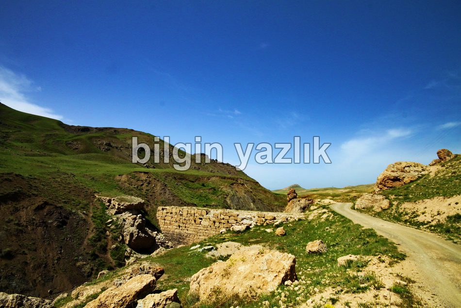
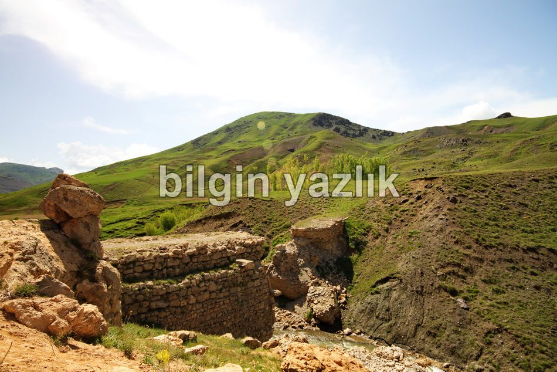
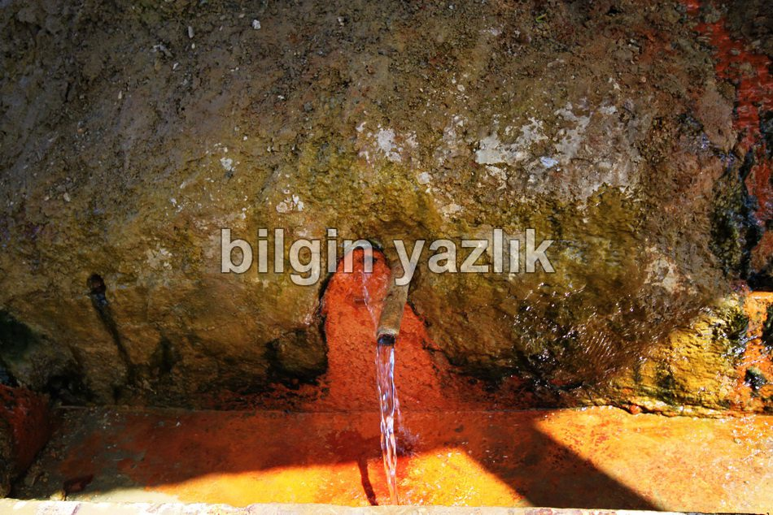

Van Gölü Havzası · 30 Mayıs 2013
Faruk Suyu
Erek dağı eteklerinde yer alan bu maden suyu kaynağı oldukça ilgi çekici bir tada sahiptir. Metalimsi bir tat ve geçtiği yerde pas rengi bir görüntü bırakan bu suyun demir içerdiğini iddia edebiliriz. Çevresi düzenlenmiş bu kaynak tamamen kendiliğinden doğal olarak yüzeye çıkmaktadır.



Bu yazı taliyol arşivinden taşınmıştır. · özgün kayıt